최대 32축까지 완전 동기·보간 제어와 최대 1024 IO 접점으로, 커스텀 자동화 설비의 두뇌 역할을 합니다.
CSCAM은 CNC 컨트롤러부터 모션 제어기, 서보/스텝 드라이브, EtherCAT IO 모듈까지 — 공작기계와 자동화 설비에 필요한 제어 시스템을 하나의 라인업으로 제공합니다. 아래에서 두 가지 핵심 축을 먼저 소개합니다.
최대 32축 완전 동기·보간 제어와 최대 1024 IO 접점을 지원하는 다축 CNC 컨트롤러 라인업입니다. 커스텀 자동화 설비부터 3·5축 머시닝센터, 터닝센터, 절단기까지 폭넓게 대응하며, 합리적인 가격의 경제형 모델부터 글로벌 기술 수준의 5축 컨트롤러까지 용도와 규모에 맞춰 선택할 수 있습니다.
CNC 제어기 자세히 보기 →CNC 제어기와 스텝 드라이브를 하나로 통합한 900d, 리눅스 기반의 보안형 펄스 인터페이스 900A, 모션제어와 PLC 시퀀스 제어를 결합한 GX-Series까지 — 대량생산 전용기 제작부터 복잡한 자동화 시스템 설계까지 최적의 경제성과 확장성을 제공합니다.
모션 제어기 자세히 보기 →최대 32축 완전 동기·보간 제어와 최대 1024 IO 접점, 용도와 규모에 맞는 CNC 컨트롤러를 선택하세요.
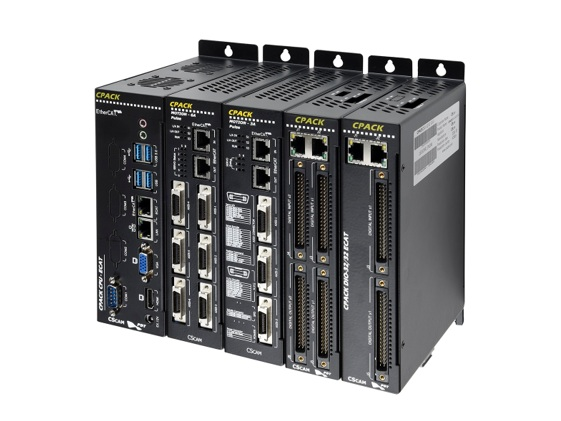
32축까지 흔들림 없이, 자동화의 중심에 서는 다축 제어기.
최대 32축 완전 동기·보간 제어와 최대 1024 IO 접점으로, 커스텀 자동화 설비의 두뇌 역할을 합니다.
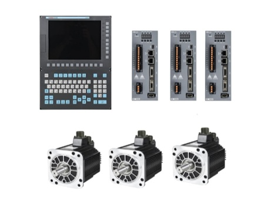
CNC 시스템 통째로, 최고성능·최저가격의 완결형 패키지.
3축 밀링 구성을 한 번에 제공해 셋업이 쉽고, 타의 추종을 불허하는 가격경쟁력을 갖췄습니다.
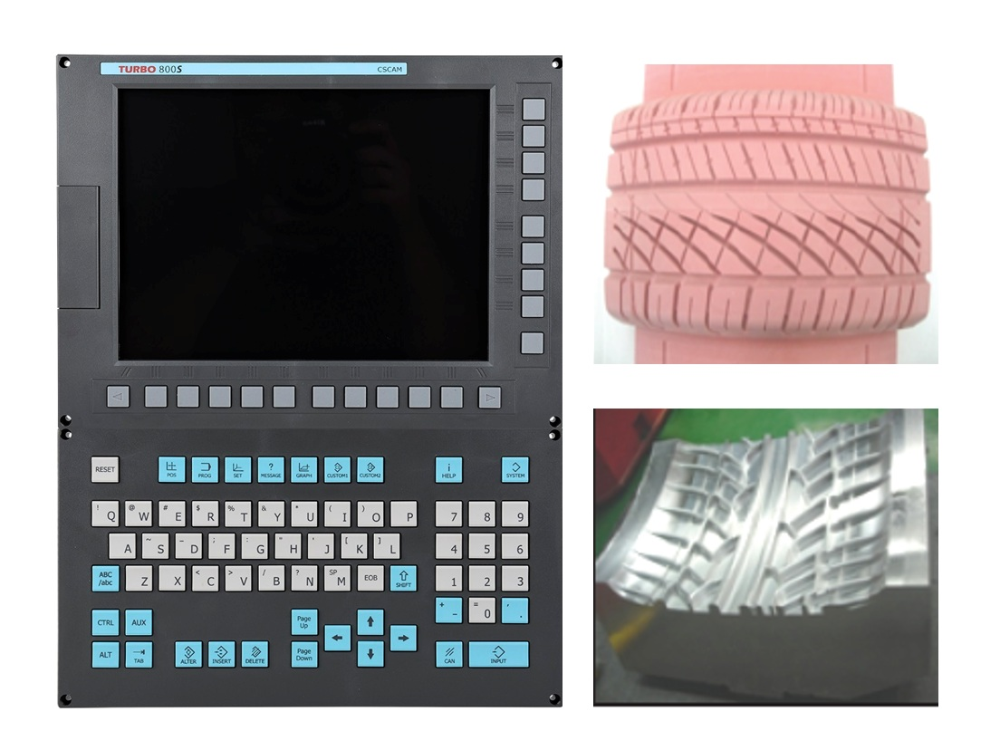
5축 가공의 정답, 20년 노하우가 만든 800S-5AX.
세계 수준의 5축 동시 가공 성능을 자랑하며, 복잡 형상 가공 현장에서 축적된 기술력을 증명합니다.
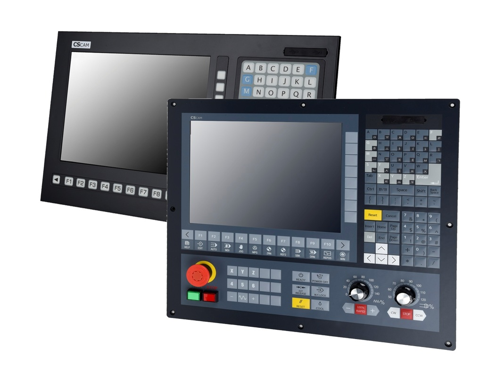
머시닝·터닝·절단, 어떤 공정에도 최적화된 만능 제어기.
머시닝센터, 터닝센터, 절단기까지 — 공정을 가리지 않는 범용성으로 현장의 표준이 됩니다.
6축/10축 통합형부터 리눅스 기반 펄스 인터페이스, PAC형 제어기까지 다양한 자동화 현장에 대응합니다.
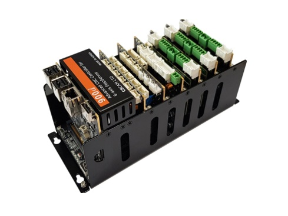
6축/10축을 하나로, 대량생산 전용기를 위한 최적의 경제성.
CNC 제어기와 스텝 드라이브를 하나로 통합한 기술집약형 시스템으로, 빠르고 강력한 6축 구동을 실현합니다.
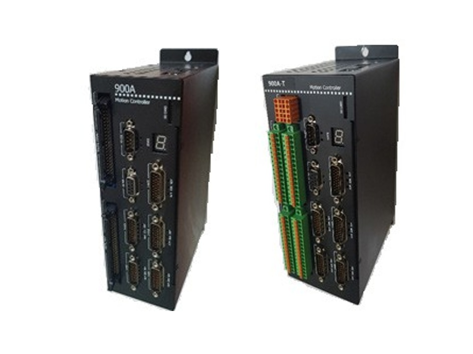
작은 몸집, 강한 보안 — 리눅스 기반 펄스 인터페이스 CNC.
컴팩트한 전용 하드웨어와 리눅스 환경 소프트웨어로 설치 공간은 줄이고 바이러스 위협은 원천 차단합니다.
400W부터 11kW까지, EtherCAT부터 아날로그/펄스까지 다양한 구성으로 대응하는 풀 디지털 서보 라인업입니다.
스텝모터의 경제성에 서보의 정밀도를 더한 하이브리드 구동 솔루션입니다.
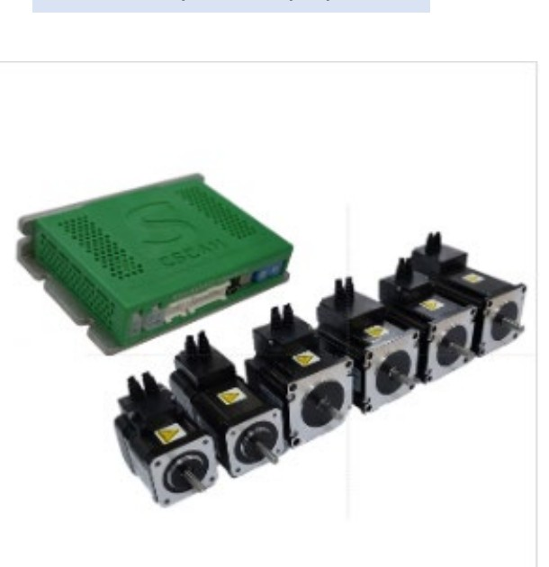
스텝모터의 경제성에 서보의 정밀도를 더하다.
+24V~+48V DC 파워로 구동되며, 고정밀 엔코더가 위치 오차를 실시간으로 보정해 안정적인 정밀 제어를 보장합니다.
CNC 제어기·모션 제어기와 함께 구성하는 입출력 확장 모듈 라인업입니다. IO 접점 확장, 아날로그 인터페이스, 휴대용 MPG까지 필요한 구성을 자유롭게 조합할 수 있습니다.
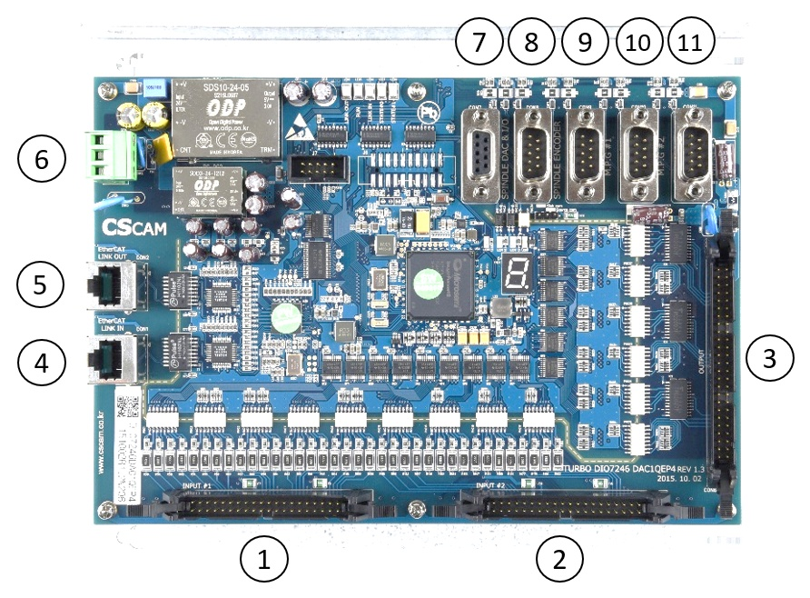
Operation Panel 용, 입력 72점·출력 46점.
EtherCAT 기반으로 간편하게 연결되며, 스핀들·MPG·엔코더 포트가 내장되어 다양한 어플리케이션에 사용할 수 있습니다.
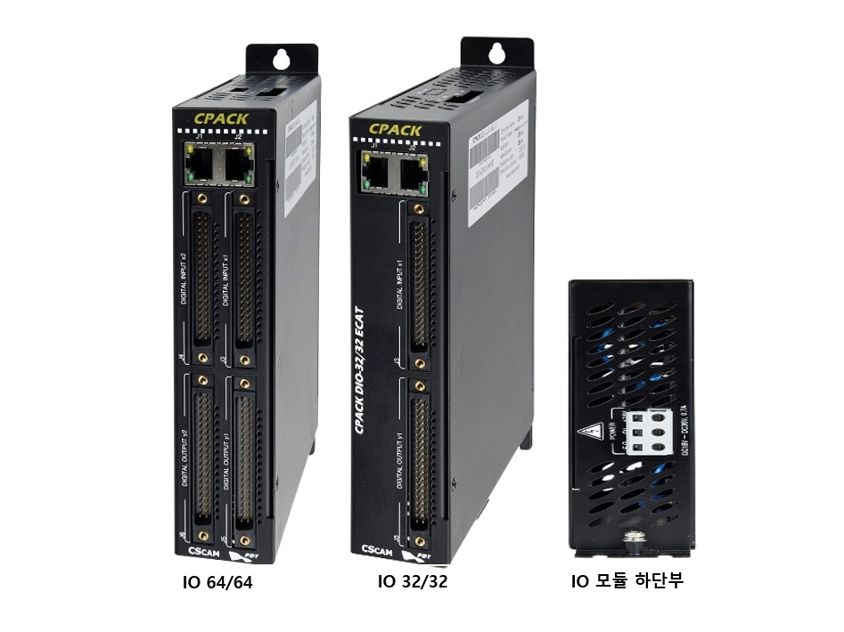
커넥터 케이블 타입, 32/32 단위로 확장.
입출력 접점을 16점 단위 COM으로 구성하며, 필요한 접점 수에 맞춰 32/32 단위로 자유롭게 확장할 수 있습니다.
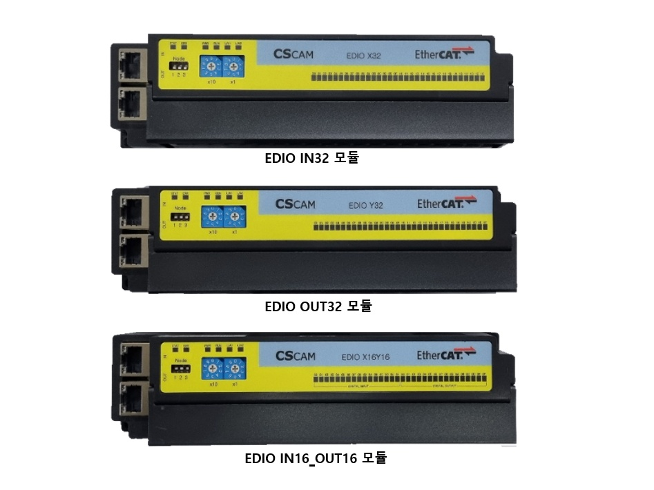
Y단자 직결 타입, 입력·출력 개별 선택.
입력 전용(IN32), 출력 전용(OUT32), 입출력 혼합(IN16/OUT16) 중 필요에 따라 선택해 구성할 수 있습니다.
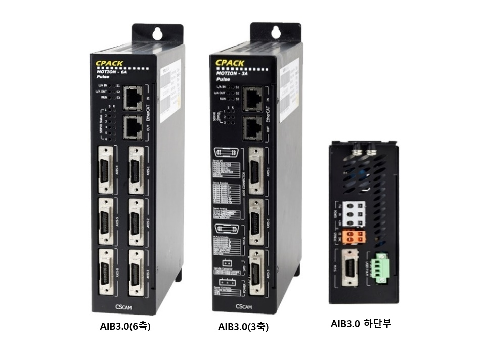
기존 드라이브의 EtherCAT I/F 전환용.
서보 축 인터페이스 포트를 6축용·3축용으로 제공하며, 아날로그·펄스 타입 MPG 포트를 모듈 하단에 지원합니다.
CNC 제어기·모션 제어기 구성 및 견적이 필요하시면 아래 연락처로 문의해 주세요.